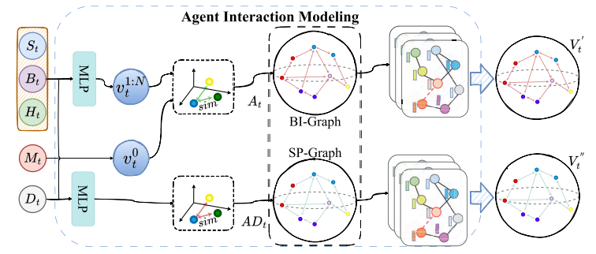

<!DOCTYPE html><html lang="zh-CN" data-theme="light"><head><meta charset="UTF-8"><meta http-equiv="X-UA-Compatible" content="IE=edge"><meta name="viewport" content="width=device-width, initial-scale=1.0,viewport-fit=cover"><title>An Interaction-Scene Collaborative Representation Framework for Detecting Traffic Anomalies in Driving Videos | 喵</title><meta name="author" content="Zhaozw"><meta name="copyright" content="Zhaozw"><meta name="format-detection" content="telephone=no"><meta name="theme-color" content="#ffffff"><meta name="description" content="An Interaction-Scene Collaborative Representation Framework for
 Detecting Traffic Anomalies in Driving Videos
 摘要
 ​  精准的交通异常检测（TAD）对智能交通系统至关重要。传统TAD方法主要依赖驾驶场景感知或交通参与者（如车辆和行人）的运动模式来检测异常。尽管这些方法在检测性能上表">
<meta property="og:type" content="article">
<meta property="og:title" content="An Interaction-Scene Collaborative Representation Framework for Detecting Traffic Anomalies in Driving Videos">
<meta property="og:url" content="https://zhaozw-szu.github.io/An-Interaction-Scene-Collaborative-Representation-Framework-for-Detecting-Traffic-Anomalies-in-Driving-Videos/index.html">
<meta property="og:site_name" content="喵">
<meta property="og:description" content="An Interaction-Scene Collaborative Representation Framework for
 Detecting Traffic Anomalies in Driving Videos
 摘要
 ​  精准的交通异常检测（TAD）对智能交通系统至关重要。传统TAD方法主要依赖驾驶场景感知或交通参与者（如车辆和行人）的运动模式来检测异常。尽管这些方法在检测性能上表">
<meta property="og:locale" content="zh_CN">
<meta property="og:image" content="https://zhaozw-szu.github.io/img/coverImage/cover1.jpg">
<meta property="article:published_time" content="2025-11-22T11:55:33.000Z">
<meta property="article:modified_time" content="2025-12-11T09:07:01.405Z">
<meta property="article:author" content="Zhaozw">
<meta name="twitter:card" content="summary">
<meta name="twitter:image" content="https://zhaozw-szu.github.io/img/coverImage/cover1.jpg"><link rel="shortcut icon" href="/img/favicon.png"><link rel="canonical" href="https://zhaozw-szu.github.io/An-Interaction-Scene-Collaborative-Representation-Framework-for-Detecting-Traffic-Anomalies-in-Driving-Videos/index.html"><link rel="preconnect" href="//cdn.jsdelivr.net"/><link rel="preconnect" href="//busuanzi.ibruce.info"/><link rel="stylesheet" href="/css/index.css?v=4.13.0"><link rel="stylesheet" href="https://cdn.jsdelivr.net/npm/@fortawesome/fontawesome-free@6.5.1/css/all.min.css"><link rel="stylesheet" href="https://cdn.jsdelivr.net/npm/@fancyapps/ui@5.0.33/dist/fancybox/fancybox.min.css" media="print" onload="this.media='all'"><script>const GLOBAL_CONFIG = {
  root: '/',
  algolia: undefined,
  localSearch: {"path":"/search.xml","preload":false,"top_n_per_article":1,"unescape":false,"languages":{"hits_empty":"找不到您查询的内容：${query}","hits_stats":"共找到 ${hits} 篇文章"}},
  translate: undefined,
  noticeOutdate: undefined,
  highlight: {"plugin":"highlight.js","highlightCopy":true,"highlightLang":true,"highlightHeightLimit":false},
  copy: {
    success: '复制成功',
    error: '复制错误',
    noSupport: '浏览器不支持'
  },
  relativeDate: {
    homepage: false,
    post: false
  },
  runtime: '',
  dateSuffix: {
    just: '刚刚',
    min: '分钟前',
    hour: '小时前',
    day: '天前',
    month: '个月前'
  },
  copyright: undefined,
  lightbox: 'fancybox',
  Snackbar: undefined,
  infinitegrid: {
    js: 'https://cdn.jsdelivr.net/npm/@egjs/infinitegrid@4.11.1/dist/infinitegrid.min.js',
    buttonText: '加载更多'
  },
  isPhotoFigcaption: false,
  islazyload: false,
  isAnchor: false,
  percent: {
    toc: true,
    rightside: false,
  },
  autoDarkmode: false
}</script><script id="config-diff">var GLOBAL_CONFIG_SITE = {
  title: 'An Interaction-Scene Collaborative Representation Framework for Detecting Traffic Anomalies in Driving Videos',
  isPost: true,
  isHome: false,
  isHighlightShrink: false,
  isToc: true,
  postUpdate: '2025-12-11 17:07:01'
}</script><script>(win=>{
      win.saveToLocal = {
        set: (key, value, ttl) => {
          if (ttl === 0) return
          const now = Date.now()
          const expiry = now + ttl * 86400000
          const item = {
            value,
            expiry
          }
          localStorage.setItem(key, JSON.stringify(item))
        },
      
        get: key => {
          const itemStr = localStorage.getItem(key)
      
          if (!itemStr) {
            return undefined
          }
          const item = JSON.parse(itemStr)
          const now = Date.now()
      
          if (now > item.expiry) {
            localStorage.removeItem(key)
            return undefined
          }
          return item.value
        }
      }
    
      win.getScript = (url, attr = {}) => new Promise((resolve, reject) => {
        const script = document.createElement('script')
        script.src = url
        script.async = true
        script.onerror = reject
        script.onload = script.onreadystatechange = function() {
          const loadState = this.readyState
          if (loadState && loadState !== 'loaded' && loadState !== 'complete') return
          script.onload = script.onreadystatechange = null
          resolve()
        }

        Object.keys(attr).forEach(key => {
          script.setAttribute(key, attr[key])
        })

        document.head.appendChild(script)
      })
    
      win.getCSS = (url, id = false) => new Promise((resolve, reject) => {
        const link = document.createElement('link')
        link.rel = 'stylesheet'
        link.href = url
        if (id) link.id = id
        link.onerror = reject
        link.onload = link.onreadystatechange = function() {
          const loadState = this.readyState
          if (loadState && loadState !== 'loaded' && loadState !== 'complete') return
          link.onload = link.onreadystatechange = null
          resolve()
        }
        document.head.appendChild(link)
      })
    
      win.activateDarkMode = () => {
        document.documentElement.setAttribute('data-theme', 'dark')
        if (document.querySelector('meta[name="theme-color"]') !== null) {
          document.querySelector('meta[name="theme-color"]').setAttribute('content', '#0d0d0d')
        }
      }
      win.activateLightMode = () => {
        document.documentElement.setAttribute('data-theme', 'light')
        if (document.querySelector('meta[name="theme-color"]') !== null) {
          document.querySelector('meta[name="theme-color"]').setAttribute('content', '#ffffff')
        }
      }
      const t = saveToLocal.get('theme')
    
        if (t === 'dark') activateDarkMode()
        else if (t === 'light') activateLightMode()
      
      const asideStatus = saveToLocal.get('aside-status')
      if (asideStatus !== undefined) {
        if (asideStatus === 'hide') {
          document.documentElement.classList.add('hide-aside')
        } else {
          document.documentElement.classList.remove('hide-aside')
        }
      }
    
      const detectApple = () => {
        if(/iPad|iPhone|iPod|Macintosh/.test(navigator.userAgent)){
          document.documentElement.classList.add('apple')
        }
      }
      detectApple()
    })(window)</script><link rel="stylesheet" type="text/css" href="/config/css/heoMainColor.css"><link rel="stylesheet" type="text/css" href="/config/css/categoryBar.css"><link rel="stylesheet" type="text/css" href="/config/css/icat.css"><link rel="stylesheet" type="text/css" href="/config/css/emoticon.css"><link rel="stylesheet" href="https://npm.elemecdn.com/swiper@8.4.2/swiper-bundle.min.css" media="print" onload="this.media='all'"><meta name="generator" content="Hexo 7.3.0"></head><body><div id="sidebar"><div id="menu-mask"></div><div id="sidebar-menus"><div class="avatar-img is-center"></div><div class="sidebar-site-data site-data is-center"><a href="/archives/"><div class="headline">文章</div><div class="length-num">182</div></a><a href="/tags/"><div class="headline">标签</div><div class="length-num">25</div></a><a href="/categories/"><div class="headline">分类</div><div class="length-num">25</div></a></div><hr class="custom-hr"/><div class="menus_items"><div class="menus_item"><a class="site-page" href="/"><i class="fa-fw fas fa-home"></i><span> 首页</span></a></div><div class="menus_item"><a class="site-page" href="/archives/"><i class="fa-fw fas fa-archive"></i><span> 时间轴</span></a></div><div class="menus_item"><a class="site-page" href="/tags/"><i class="fa-fw fas fa-tags"></i><span> 标签</span></a></div><div class="menus_item"><a class="site-page" href="/categories/"><i class="fa-fw fas fa-folder-open"></i><span> 分类</span></a></div><div class="menus_item"><a class="site-page group" href="javascript:void(0);"><i class="fa-fw fa fa-chart-simple"></i><span> 文库</span><i class="fas fa-chevron-down"></i></a><ul class="menus_item_child"><li><a class="site-page child" href="/rank/"><i class="fa-fw fas fa-line-chart"></i><span> 等级</span></a></li><li><a class="site-page child" href="/paper/"><i class="fa-fw fas fa-line-chart"></i><span> 期刊</span></a></li><li><a class="site-page child" href="/competition/"><i class="fa-fw fas fa-database"></i><span> 比赛</span></a></li><li><a class="site-page child" href="/code/"><i class="fa-fw fas fa-code"></i><span> 代码</span></a></li></ul></div><div class="menus_item"><a class="site-page" href="/link/"><i class="fa-fw fas fa-link"></i><span> 友链</span></a></div><div class="menus_item"><a class="site-page group" href="javascript:void(0);"><i class="fa-fw fas fa-sun"></i><span> 关于</span><i class="fas fa-chevron-down"></i></a><ul class="menus_item_child"><li><a class="site-page child" href="/about/"><i class="fa-fw fas fa-heart"></i><span> 关于</span></a></li><li><a class="site-page child" href="/essay/"><i class="fa-fw fas fa-music"></i><span> 日记</span></a></li><li><a class="site-page child" href="/game/"><i class="fa-fw fas fa-gamepad"></i><span> 小游戏</span></a></li></ul></div></div></div></div><div class="post" id="body-wrap"><header class="post-bg" id="page-header" style="background-image: url('/img/coverImage/cover1.jpg')"><nav id="nav"><span id="blog-info"><a href="/" title="喵"><span class="site-name">喵</span></a></span><div id="menus"><div id="search-button"><a class="site-page social-icon search" href="javascript:void(0);"><i class="fas fa-search fa-fw"></i><span> 搜索</span></a></div><div class="menus_items"><div class="menus_item"><a class="site-page" href="/"><i class="fa-fw fas fa-home"></i><span> 首页</span></a></div><div class="menus_item"><a class="site-page" href="/archives/"><i class="fa-fw fas fa-archive"></i><span> 时间轴</span></a></div><div class="menus_item"><a class="site-page" href="/tags/"><i class="fa-fw fas fa-tags"></i><span> 标签</span></a></div><div class="menus_item"><a class="site-page" href="/categories/"><i class="fa-fw fas fa-folder-open"></i><span> 分类</span></a></div><div class="menus_item"><a class="site-page group" href="javascript:void(0);"><i class="fa-fw fa fa-chart-simple"></i><span> 文库</span><i class="fas fa-chevron-down"></i></a><ul class="menus_item_child"><li><a class="site-page child" href="/rank/"><i class="fa-fw fas fa-line-chart"></i><span> 等级</span></a></li><li><a class="site-page child" href="/paper/"><i class="fa-fw fas fa-line-chart"></i><span> 期刊</span></a></li><li><a class="site-page child" href="/competition/"><i class="fa-fw fas fa-database"></i><span> 比赛</span></a></li><li><a class="site-page child" href="/code/"><i class="fa-fw fas fa-code"></i><span> 代码</span></a></li></ul></div><div class="menus_item"><a class="site-page" href="/link/"><i class="fa-fw fas fa-link"></i><span> 友链</span></a></div><div class="menus_item"><a class="site-page group" href="javascript:void(0);"><i class="fa-fw fas fa-sun"></i><span> 关于</span><i class="fas fa-chevron-down"></i></a><ul class="menus_item_child"><li><a class="site-page child" href="/about/"><i class="fa-fw fas fa-heart"></i><span> 关于</span></a></li><li><a class="site-page child" href="/essay/"><i class="fa-fw fas fa-music"></i><span> 日记</span></a></li><li><a class="site-page child" href="/game/"><i class="fa-fw fas fa-gamepad"></i><span> 小游戏</span></a></li></ul></div></div><div id="toggle-menu"><a class="site-page" href="javascript:void(0);"><i class="fas fa-bars fa-fw"></i></a></div></div></nav><div id="post-info"><h1 class="post-title">An Interaction-Scene Collaborative Representation Framework for Detecting Traffic Anomalies in Driving Videos</h1><div id="post-meta"><div class="meta-firstline"><span class="post-meta-date"><i class="far fa-calendar-alt fa-fw post-meta-icon"></i><span class="post-meta-label">创建于</span><time class="post-meta-date-created" datetime="2025-11-22T11:55:33.000Z" title="创建于 2025-11-22 19:55:33">2025-11-22</time><span class="post-meta-separator">|</span><i class="fas fa-history fa-fw post-meta-icon"></i><span class="post-meta-label">更新于</span><time class="post-meta-date-updated" datetime="2025-12-11T09:07:01.405Z" title="更新于 2025-12-11 17:07:01">2025-12-11</time></span></div><div class="meta-secondline"><span class="post-meta-separator">|</span><span class="post-meta-pv-cv" id="" data-flag-title="An Interaction-Scene Collaborative Representation Framework for Detecting Traffic Anomalies in Driving Videos"><i class="far fa-eye fa-fw post-meta-icon"></i><span class="post-meta-label">阅读量:</span><span id="busuanzi_value_page_pv"><i class="fa-solid fa-spinner fa-spin"></i></span></span></div></div></div></header><main class="layout" id="content-inner"><div id="post"><article class="post-content" id="article-container"><p>An Interaction-Scene Collaborative Representation Framework for
Detecting Traffic Anomalies in Driving Videos</p>
<h1 id="摘要">摘要</h1>
<p>​  精准的交通异常检测（TAD）对智能交通系统至关重要。传统TAD方法主要依赖驾驶场景感知或交通参与者（如车辆和行人）的运动模式来检测异常。尽管这些方法在检测性能上表现优异，但缺乏对参与者交互的直观建模，这限制了其处理复杂驾驶场景的能力。事实上，建立参与者间的交互模型有助于理解行为变化背后的逻辑机制，从而提升交通异常检测效果。本研究提出交互场景协同表征交通异常检测框架（<strong>ISCRTAD</strong>，Interaction-Scene
Collaborative Representation for Traffic Anomaly
Detection），该创新框架通过运用先进人工智能技术，实现了动态驾驶场景中参与者交互关系的建模。与以往的TAD方法不同，本文提出的方法首次尝试协作表示代理交互和动态驾驶场景，显著提升了对驾驶视频中交通异常的感知和理解。首先，我们介绍了代理交互建模模块，通过设计的行为交互图和空间感知图，全面建模了驾驶场景中代理之间的交互。此外，我们设计了一种异构模态协作表示（<strong>HMCR</strong>，heterogeneous
modality collaborative
representation）机制，深入整合代理交互与动态驾驶场景，从而更深刻地理解动态驾驶环境中的代理运动模式。在DoTA和DADA数据集上的实验结果表明，交通异常检测性能有显著提升，突显了我们AI驱动方法的有效性。</p>
<h1 id="引言">1.引言</h1>
<p>​  在动态驾驶环境中，智能体间的交互行为对判定正常与异常驾驶模式至关重要。因此，开发能有效模拟动态驾驶场景中智能体交互的建模方法，对交通异常检测任务具有重要研究价值。然而，动态驾驶场景中智能体交互的复杂性，加之驾驶场景视觉表征与智能体交互特征之间的异质性，使得理解动态场景中智能体行为的底层逻辑面临挑战。因此，开发一种能整合异构模态信息（包括智能体交互模式与动态驾驶场景的视觉描述）的协同表征机制，对于在复杂驾驶场景中检测交通异常至关重要。<br/>​  面对上述挑战，我们的核心目标是探索一种模拟真实驾驶场景的方法，通过全面感知和理解驾驶环境，从而提升在复杂驾驶场景中检测交通异常的能力。该方法需要具备两大关键特性：1）有效建模智能体交互的能力；2）精准感知动态驾驶场景的能力。为此，我们提出了一种基于交互场景协同表征的驾驶视频交通异常检测方法（ISCRTAD）。具体而言，我们首先运用视觉感知算法提取驾驶场景中涉及交通的关键要素。随后，设计智能体交互建模模块，通过构建的行为交互图和空间感知图来模拟智能体间的交互关系。接着，引入协同表征机制将智能体交互与动态驾驶场景相结合。最终，通过融合表征来评估驾驶场景中是否存在交通异常。<br/>​  实验结果表明，所提出的ISCRTAD模型在DoTA数据集[11]和DADA数据集[13]上表现优异，其AUC值分别比当前最先进的竞争模型高出1.5%和7.7%。本研究的主要贡献可归纳如下：</p>
<ol type="1">
<li>我们提出了一种创新的TAD框架，能够协同呈现智能体交互与动态驾驶场景。与现有方法不同，本方案首次明确捕捉交互与动态驾驶场景的双重影响，从而在复杂驾驶环境中实现高效的异常检测。<br/>2.
我们提出了一种代理交互建模（AIM，Agent Interaction
Modeling）模块，该模块同时整合了行为交互图（BI-Graph）和空间感知图（SPGraph），以全面建模代理之间的交互。BI-Graph自适应地模拟代理间的相互影响，而SPGraph则捕捉代理间的空间关系。通过结合使用，我们的AIM模块增强了对代理运动行为的感知与理解。<br/>3.
我们进一步提出一种异构模态协同表征机制，该机制通过将动态场景表征视为超级节点，将动态场景与智能体交互相结合。通过对比学习，该机制在特征空间中对齐两个图，实现深度协同，并显著提高检测精度。<br/>4.
在DoTA和DADA数据集上，iscrtad方法的检测性能优于现有的最先进的方法。</li>
</ol>
<h1 id="提出的方法-iscrtad">3.提出的方法： ISCRTAD</h1>
<p>​  在本节中，我们介绍所提出的ISCRTAD框架。首先，我们概述iscrtad的整体框架。然后，我们描述iscrtad的三个关键组件，即特征提取、代理交互建模以及异构模态协作表示（HMCR）机制。最后，我们概述所提框架的损失函数，并展示如何进行交通异常检测。</p>
<h2 id="a.-iscrtad框架概述">A. ISCRTAD框架概述</h2>
<p>​  所提出的ISCRTAD框架如图3所示，由三个主要组件组成：1）特征提取，2）智能体交互建模，3）异构模态协同表征（HMCR）机制。</p>
<figure>

<figcaption aria-hidden="true">image-20251122201131370</figcaption>
</figure>
<blockquote>
<p>图3.
我们框架的概述。所提出的框架由三个主要部分组成：特征提取、智能体交互建模（AIM，agent
interaction modeling）和异构模态协作表示（HMCR，heterogeneous modality
collaboration
representation）机制。首先，特征提取模块利用视觉感知算法从驾驶场景中提取关键特征。接着，AIM模块通过行为交互图（BI-Graph，behavior
interaction graph）和空间感知图（SP-Graph，spatial perception
graph）自适应地建模智能体之间的交互。最后， HMCR
机制引入动态驾驶场景表示，并将其与智能体交互特征协作，形成统一表示。</p>
</blockquote>
<p>​  具体而言，特征提取模块利用现有的视觉感知算法从驾驶场景中提取关键交通相关元素，并对其进行编码以获得相应的表征。接下来，智能体交互建模模块使用获取的表征构建行为交互和空间感知图，实现对智能体交互的全面建模。此外，
HMCR
机制引入了动态驾驶场景表征，将其视为超级节点连接行为交互和空间感知图中的所有元素。这两种图表征随后在特征维度上对齐，以实现异构模态信息的深度协同表征。最后，融合后的表征用于评估驾驶场景中是否发生交通异常。在接下来的章节中，我们将详细介绍这三个关键模块。</p>
<h2 id="b.-特征提取">B. 特征提取</h2>
<p>​  为精确建模驾驶场景中智能体间的交互作用，我们首先利用现有的视觉感知算法从驾驶场景中提取相关特征，并将其编码为高维表示。<br/>​  具体而言，我们提取相关特征，包括代理的边界框和像素级外观、代理的轨迹、自我车辆的运动以及驾驶场景的深度信息。该过程可形式化为如下步骤：
<span class="math display">\[B o x_{t},\,A p p_{t},\,T r a_{t-n:t},\,M o
t_{t},\,D e_{t}=V i s u a l(F_{t-n:t})\;,\]</span> ​  其中<span
class="math inline">\(F_{t-n:t}\)</span>表示从时间n−t到t的视频帧；<span
class="math inline">\(Box_t\)</span>表示在帧t中检测到的智能体边界框；<span
class="math inline">\(App_t\)</span>指智能体的外观特征，这些特征根据边界框从驾驶场景中裁剪并调整尺寸；<span
class="math inline">\(T r
a_{t-n:t}\)</span>表示智能体从时间t−n到t的历史轨迹（本实验中n=4）；<span
class="math inline">\(M o
t_{t}\)</span>表示时间t的视觉里程计数据，我们将其视为自车的运动轨迹；<span
class="math inline">\(D
e_{t}\)</span>则表示帧t中智能体的深度估计信息。在实验中，我们采用YOLOv6[41]、Deep
OC-Sort[42]和TSformer-VO[43]等视觉感知算法，从驾驶视频中提取关键特征。本框架的核心在于精准建模智能体间的空间关系，这是理解其交互行为的基础。传统非生成式深度估计方法因先验知识有限，常在罕见场景中出现预测偏差。相比之下，扩散模型和生成对抗网络等生成式AI模型通过自监督学习，从海量未标注数据中提取隐性先验，大幅降低对标注数据集的依赖。这些方法通过对抗训练或迭代去噪优化深度图生成，既提升了空间关系建模精度，又增强了跨场景泛化能力[44]
[45]。本研究基于Depth
Anything[46]的高效性与性能优势，采用其在驾驶场景中的深度信息估计技术，精准刻画智能体间的空间关系。<br/>​  此外，我们对提取的特征进行编码，以获得相应的高维表示，具体如下：
<span class="math display">\[\begin{array}{l}{B_{t}=E n c o d e
r_{b}\left(B o x_{t};\theta_{b}\right),}\\{S_{t}=E n c o d e
r_{a}\left(A p p_{t};\theta_{a}\right),}\\{H_{t}=E n c o d e r_{t r a
j}\left(T r a_{t-n;t};\theta_{m}\right),}\\{M_{t}=E n c o d e
r_{d}\left(M o t_{t};\theta_{m}\right),}\\{D_{t}=E n c o d e
r_{d}\left(D e_{t};\theta_{d}\right)}\end{array}\]</span>
​  其中，Encoderb（·）编码边界框，由一个全连接层（FC）和一个ReLU激活函数组成。同样地，Encoderm（·）和
Encoderd（·）分别用于获取自我车辆的运动表示和代理的深度表示，两者均由一个FC层和一个ReLU激活函数组成。Encodera（·）编码代理的外观，由三个带有ReLU激活函数的卷积层和一个FC层组成。Encodertraj（·）编码代理的轨迹，采用循环神经网络实现。此外，
θ ∗ 表示相应编码器的可学习参数。（Bt，St，Ht，Dt）∈ R N×C 和 Mt ∈ R 1×C
是相应的表示。N 表示代理的数量，C
指特征表示的维度。在获得上述特征表示后，模型可以有效感知驾驶场景中代理的运动状态。</p>
<h2 id="c.-代理交互建模aim">C. 代理交互建模（AIM）</h2>
<p>​  实际上，通过建立智能体间的交互模型，我们能深入理解其行为变化背后的逻辑机制，从而有效提升交通异常检测能力。在自动驾驶场景中，智能体的运动状态与空间位置关系是影响其交互的关键因素。因此，准确把握智能体间的空间关系，并基于其运动状态建立精准的交互模型，对于揭示智能体的运动规律具有至关重要的意义。<br/>​  本研究提出了一种智能体交互建模（AIM）模块，用于直观捕捉智能体间的交互关系。如图4所示，该模块包含两个核心组件：行为交互图（BI-graph）与空间感知图（SP-graph）。其中，行为交互图通过分析场景中智能体的运动状态，揭示其相互作用机制，从而展现底层交互逻辑。另一方面，SP图整合了位置信息，以聚焦于驾驶场景中各智能体之间的空间关系。前者有助于理解智能体行为变化背后的逻辑，后者则提供智能体相对位置的关键信息，这对理解异常行为至关重要。通过结合这两种图类型，可以更全面地建模智能体间的交互关系，从而更深入地理解智能体行为模式，并实现更精准有效的交通异常检测。</p>
<figure>

<figcaption aria-hidden="true">image-20251201092846388</figcaption>
</figure>
<blockquote>
<p>图4.
代理交互建模（AIM）模块的结构。该模块主要由行为交互图（BI-Graph）和空间感知图（SP-Graph）组成。前者模拟代理之间的相互影响，后者则捕捉它们的空间关系。</p>
</blockquote>
<p>1)行为交互图</p>
<p>​  为自适应建模驾驶场景中各智能体间的相互影响，我们基于图结构设计了行为交互图。<br/>​  具体而言，如图4所示，驾驶场景中的所有智能体均被视作行为交互图中的节点。节点特征定义如下：
<span class="math display">\[\begin{array}{l}{V_{t}=M L P\ (C o n c a t\
(B_{t},\,H_{t},\,S_{t};\,1)\,;\theta_{n o d e})\,,}\\ {V_{t}:=C o n c a
t\ (M_{t},\,V_{t};0)\,,}\end{array}\]</span> ​  其中，concat（：；
1）表示边界框、代理运动和外观表示在特征维度上的拼接；MLP（·）表示一个多层感知器，由一个全连接层和一个
ReLU 激活函数组成； θnode 表示可学习参数。concat（Mt，Vt；
0）将自我车辆的运动表示与其他节点拼接；Vt ∈ R（N+1）×C
表示行为交互图的节点表示。<br/>​  此外，我们通过构建邻接矩阵来描述各代理之间的相互影响，该矩阵的数学表达式如下：
<span class="math display">\[a_{t}^{i
j}=g(x,y)=\left\{\begin{array}{lr}\frac{v_{t}^{i}\cdot(v_{t}^{j})^{T}}{\|v_{t}^{i}\|\cdot\|v_{t}^{j}\|},&amp;\quad\mathrm{if~}i\gt
0\mathrm{~and~}j\gt 0\\1,&amp;\quad\mathrm{if~}i = 0\mathrm{~or~}j =
0\end{array}\right.\]</span> ​  其中 {vt 0 ，vt 1 ，vt 2 ，... ，vt i
，... ，vt N } = Vt。在邻接矩阵 At 中，vj 表示节点 vt i 对节点 vt j
的影响，第一个节点对应于自我车辆。具体来说，我们使用余弦相似度来计算代理之间的相互影响。此外，为了自适应地关注最关键代理，我们通过应用预定义的阈值对邻接矩阵进行稀疏化，如下所述：</p>
<p>1)空间感知图</p>
<p>​  为准确捕捉驾驶场景中各智能体的空间关系，我们进一步设计了空间感知图来实现智能体交互的精准建模。<br/>​  具体而言，参照行为交互图的构建方式，首先将驾驶场景中的所有智能体作为空间感知图的节点。随后，为建模不同智能体之间的空间位置关系，我们按以下方式构建空间感知图的邻接矩阵：
<span class="math display">\[\begin{array}{l}D i s_{t}=M L P\ (C o n
c_{s}t\;(B_{t},D_{t};1)\,;\,\theta_{d i s})\\d i s_{t}^{i
j}=\left\{\begin{array}{lr}\frac{d_{t}^{i}\cdot\left(d_{t}^{j}\right)^{T}}{\left\|d_{t}^{i}\right\|\cdot\left\|d_{t}^{j}\right\|\cdot\left\|d_{t}^{j}\right\|},&amp;\mathrm{~if~}i\gt
0 \mathrm{~and~}j\gt 0\\1,&amp;\mathrm{~if~}i = 0 \mathrm{~or~}j =
0\end{array}\right.\\A D_{t}={\left\{\begin{array}{l l}{d i s_{t}^{i
j},{\mathrm{~if~}}d i s_{t}^{i j}\gt \varepsilon,}\\ {0,{\mathrm{~if~}}d
i s_{t}^{i j}\leq\varepsilon,}\end{array}\right.}\end{array}\]</span>
​  其中 Dist = {dt 1 ，dt 2 ，dt i ，... ，dt N }，di t ∈ R
1×C，表示驾驶场景中各代理的空间位置表示，这些表示源自边界框表示及其对应的深度表示。在我们的工作中，采用余弦相似度来衡量两个节点之间的空间关系，其中自我车辆与其他所有节点之间的空间关系设为1。然后，使用预定义的阈值
ε 对空间感知图的邻接矩阵进行稀疏化，得到ADt。在实验中，我们经验性地将 ε
设置为0.5。</p>
<h2 id="d.-异构模态协同表示机制hmcr">D.
异构模态协同表示机制（HMCR）</h2>
<p>​  注意到驾驶场景在行驶过程中表现出动态特性。为了模拟代理交互和动态驾驶场景的双重影响，我们进一步提出了一种异构模态协作表示（HMCR）机制。其核心思想是将动态驾驶场景表示作为超级节点，连接行为交互图和空间感知图中的所有节点，从而实现异构模态的协作表示，即代理交互和动态驾驶场景的表示。</p>
<h1 id="结论">5.结论</h1>
<p>​  本研究提出了一种交互场景协同表征方法，用于驾驶视频中的交通异常检测。该方法首次明确建模了智能体交互与动态驾驶场景的双重影响，显著提升了在复杂驾驶环境中检测由智能体交互引发的交通异常的能力。实验结果表明，所提出的智能体交互建模方法能自适应捕捉驾驶场景中智能体间的交互关系。此外，通过引入异构模态协同表征机制，实现了智能体交互与动态驾驶场景的联合表征，从而在复杂驾驶场景中实现了交通异常检测准确率的显著提升。<br/>​  尽管取得这些进展，该方法仍存在若干局限性。首先，其性能受限于视觉感知算法的能力。在极端天气条件或高度遮挡环境等更具挑战性的驾驶场景中，异常检测的准确性可能降低。其次，该框架在训练过程中依赖标注的驾驶视频数据。未来探索端到端弱监督或无监督的交通异常检测方法，既能缓解视觉感知算法的局限性，又能大幅降低对数据采集和标注的依赖。此外，整合多模态数据（如激光雷达、雷达等）将为提升交通异常检测系统的鲁棒性和泛化能力开辟新路径。我们期待这项研究能为这个重要且快速发展的领域注入新的研究动力。</p>
</article><div class="post-copyright"><div class="post-copyright__author"><span class="post-copyright-meta"><i class="fas fa-circle-user fa-fw"></i>文章作者: </span><span class="post-copyright-info"><a href="https://zhaozw-szu.github.io">Zhaozw</a></span></div><div class="post-copyright__type"><span class="post-copyright-meta"><i class="fas fa-square-arrow-up-right fa-fw"></i>文章链接: </span><span class="post-copyright-info"><a href="https://zhaozw-szu.github.io/An-Interaction-Scene-Collaborative-Representation-Framework-for-Detecting-Traffic-Anomalies-in-Driving-Videos/">https://zhaozw-szu.github.io/An-Interaction-Scene-Collaborative-Representation-Framework-for-Detecting-Traffic-Anomalies-in-Driving-Videos/</a></span></div><div class="post-copyright__notice"><span class="post-copyright-meta"><i class="fas fa-circle-exclamation fa-fw"></i>版权声明: </span><span class="post-copyright-info">本博客所有文章除特别声明外，均采用 <a href="https://creativecommons.org/licenses/by-nc-sa/4.0/" target="_blank">CC BY-NC-SA 4.0</a> 许可协议。转载请注明来自 <a href="https://zhaozw-szu.github.io" target="_blank">喵</a>！</span></div></div><div class="tag_share"><div class="post-meta__tag-list"></div><div class="post_share"><div class="social-share" data-image="/img/coverImage/cover1.jpg" data-sites="facebook,twitter,wechat,weibo,qq"></div><link rel="stylesheet" href="https://cdn.jsdelivr.net/npm/butterfly-extsrc@1.1.3/sharejs/dist/css/share.min.css" media="print" onload="this.media='all'"><script src="https://cdn.jsdelivr.net/npm/butterfly-extsrc@1.1.3/sharejs/dist/js/social-share.min.js" defer></script></div></div><nav class="pagination-post" id="pagination"><div class="prev-post pull-left"><a href="/Text-Driven-Traffic-Anomaly-Detection-With-Temporal-High-Frequency-Modeling-in-Driving-Videos/" title="Text-Driven Traffic Anomaly Detection With Temporal High-Frequency Modeling in Driving Videos"><div class="pagination-info"><div class="label">上一篇</div><div class="prev_info">Text-Driven Traffic Anomaly Detection With Temporal High-Frequency Modeling in Driving Videos</div></div></a></div><div class="next-post pull-right"><a href="/A-memory-augmented-multi-task-collaborative-framework-for-unsupervisedtraffic-anomaly-detection-in-driving-videos/" title="A memory-augmented multi-task collaborative framework for unsupervised traffic anomaly detection in driving videos"><div class="pagination-info"><div class="label">下一篇</div><div class="next_info">A memory-augmented multi-task collaborative framework for unsupervised traffic anomaly detection in driving videos</div></div></a></div></nav><hr class="custom-hr"/><div id="post-comment"><div class="comment-head"><div class="comment-headline"><i class="fas fa-comments fa-fw"></i><span> 评论</span></div><div class="comment-tools"><div class="comment-randomInfo"><a onclick="addRandomCommentInfo()" href="javascript:void(0)" rel="external nofollow" data-pjax-state="">匿名评论</a></div></div></div><div class="comment-wrap"><div><div id="twikoo-wrap"></div></div></div><script>function addRandomCommentInfo() {
  if (!confirm('开启匿名评论后，任何人将无法回复你的评论（包括博主），是否开启？')) {
    return;
  }
  var inputElements = document.getElementsByClassName('el-input__inner');
  const adjectives = ['幽默的', '豁达的', '温暖的', '优雅的', '活泼的', '迷人的', '甜美的', '聪明的', '坚定的', '善于思考的'];
  const nouns = ['橙子', '茄子', '西瓜', '辣椒', '草莓', '葡萄', '胡萝卜', '柠檬', '苹果', '香蕉'];
  for(var i = 0; i < inputElements.length; i++) {
    var input = inputElements[i];
    var name = input.getAttribute('name');
    const randomAdj = adjectives[Math.floor(Math.random() * adjectives.length)];
    const randomNoun = nouns[Math.floor(Math.random() * nouns.length)];

    switch (name) {
      case 'nick':
        input.value = `${randomAdj}${randomNoun}`;
        break;
      case 'mail':
        input.value = 'zhaozw-szu@users.noreply.github.com';
        break;
      case 'link':
        input.value = 'https://zhaozw-szu.github.io/';
        break;
      default:
        break;
    }
  }  
}</script></div></div><div class="aside-content" id="aside-content"><div class="card-widget card-info"><div class="is-center"><div class="avatar-img"></div><div class="author-info__name">Zhaozw</div><div class="author-info__description">人完成了引以为豪的事,才能够感到荣耀，否则,虚伪的自豪只会腐蚀心灵。</div></div><div class="card-info-data site-data is-center"><a href="/archives/"><div class="headline">文章</div><div class="length-num">182</div></a><a href="/tags/"><div class="headline">标签</div><div class="length-num">25</div></a><a href="/categories/"><div class="headline">分类</div><div class="length-num">25</div></a></div><a id="card-info-btn" target="_blank" rel="noopener" href="https://github.com/zhaozw-szu"><i class="fab fa-github"></i><span>Follow Me</span></a><div class="card-info-social-icons is-center"><a class="social-icon" href="https://github.com/zhaozw-szu" target="_blank" title="Github"><i class="fab fa-github" style="color: #24292e;"></i></a><a class="social-icon" href="/2300432033@email.szu.edu.com" target="_blank" title="Email"><i class="fas fa-envelope" style="color: #4a7dbe;"></i></a></div></div><div class="card-widget card-announcement"><div class="item-headline"><i class="fas fa-bullhorn fa-shake"></i><span>公告</span></div><div class="announcement_content"><a href="/code">代码页面</a>：收罗图像取证安全领域已公布/待公布的代码 <br>,<a href="/competition">比赛页面</a>：收罗图像取证安全领域的比赛</div></div><div class="sticky_layout"><div class="card-widget" id="card-toc"><div class="item-headline"><i class="fas fa-stream"></i><span>目录</span><span class="toc-percentage"></span></div><div class="toc-content"><ol class="toc"><li class="toc-item toc-level-1"><a class="toc-link" href="#%E6%91%98%E8%A6%81"><span class="toc-text">摘要</span></a></li><li class="toc-item toc-level-1"><a class="toc-link" href="#%E5%BC%95%E8%A8%80"><span class="toc-text">1.引言</span></a></li><li class="toc-item toc-level-1"><a class="toc-link" href="#%E6%8F%90%E5%87%BA%E7%9A%84%E6%96%B9%E6%B3%95-iscrtad"><span class="toc-text">3.提出的方法： ISCRTAD</span></a><ol class="toc-child"><li class="toc-item toc-level-2"><a class="toc-link" href="#a.-iscrtad%E6%A1%86%E6%9E%B6%E6%A6%82%E8%BF%B0"><span class="toc-text">A. ISCRTAD框架概述</span></a></li><li class="toc-item toc-level-2"><a class="toc-link" href="#b.-%E7%89%B9%E5%BE%81%E6%8F%90%E5%8F%96"><span class="toc-text">B. 特征提取</span></a></li><li class="toc-item toc-level-2"><a class="toc-link" href="#c.-%E4%BB%A3%E7%90%86%E4%BA%A4%E4%BA%92%E5%BB%BA%E6%A8%A1aim"><span class="toc-text">C. 代理交互建模（AIM）</span></a></li><li class="toc-item toc-level-2"><a class="toc-link" href="#d.-%E5%BC%82%E6%9E%84%E6%A8%A1%E6%80%81%E5%8D%8F%E5%90%8C%E8%A1%A8%E7%A4%BA%E6%9C%BA%E5%88%B6hmcr"><span class="toc-text">D.
异构模态协同表示机制（HMCR）</span></a></li></ol></li><li class="toc-item toc-level-1"><a class="toc-link" href="#%E7%BB%93%E8%AE%BA"><span class="toc-text">5.结论</span></a></li></ol></div></div></div></div></main><footer id="footer"><div id="footer-wrap"><div class="copyright">&copy;2020 - 2025 By Zhaozw</div><div class="framework-info"><span>框架 </span><a target="_blank" rel="noopener" href="https://hexo.io">Hexo</a><span class="footer-separator">|</span><span>主题 </span><a target="_blank" rel="noopener" href="https://github.com/jerryc127/hexo-theme-butterfly">Butterfly</a></div></div><script src="https://cdn.bootcdn.net/ajax/libs/mermaid/8.13.8/mermaid.min.js"></script></footer></div><div id="rightside"><div id="rightside-config-hide"><button id="readmode" type="button" title="阅读模式"><i class="fas fa-book-open"></i></button><button id="darkmode" type="button" title="浅色和深色模式转换"><i class="fas fa-adjust"></i></button><button id="hide-aside-btn" type="button" title="单栏和双栏切换"><i class="fas fa-arrows-alt-h"></i></button></div><div id="rightside-config-show"><button id="rightside-config" type="button" title="设置"><i class="fas fa-cog fa-spin"></i></button><button class="close" id="mobile-toc-button" type="button" title="目录"><i class="fas fa-list-ul"></i></button><a id="to_comment" href="#post-comment" title="直达评论"><i class="fas fa-comments"></i></a><button id="go-up" type="button" title="回到顶部"><span class="scroll-percent"></span><i class="fas fa-arrow-up"></i></button></div></div><div><script src="/js/utils.js?v=4.13.0"></script><script src="/js/main.js?v=4.13.0"></script><script defer src="https://npm.elemecdn.com/swiper@8.4.2/swiper-bundle.min.js"></script><script defer data-pjax src="/js/custom/swiper_init.js"></script><script src="https://cdn.jsdelivr.net/npm/@fancyapps/ui@5.0.33/dist/fancybox/fancybox.umd.min.js"></script><div class="js-pjax"><script>if (!window.MathJax) {
  window.MathJax = {
    tex: {
      inlineMath: [['$', '$'], ['\\(', '\\)']],
      tags: 'all'
    },
    chtml: {
      scale: 1.1
    },
    options: {
      renderActions: {
        findScript: [10, doc => {
          for (const node of document.querySelectorAll('script[type^="math/tex"]')) {
            const display = !!node.type.match(/; *mode=display/)
            const math = new doc.options.MathItem(node.textContent, doc.inputJax[0], display)
            const text = document.createTextNode('')
            node.parentNode.replaceChild(text, node)
            math.start = {node: text, delim: '', n: 0}
            math.end = {node: text, delim: '', n: 0}
            doc.math.push(math)
          }
        }, '']
      }
    }
  }
  
  const script = document.createElement('script')
  script.src = 'https://cdn.jsdelivr.net/npm/mathjax@3.2.2/es5/tex-mml-chtml.min.js'
  script.id = 'MathJax-script'
  script.async = true
  document.head.appendChild(script)
  //- console.log('MathJax loaded')
} else {
  // 重置 TeX 状态并重新渲染
  MathJax.startup.promise.then(() => {
    MathJax.texReset();  // 重置 TeX 编号等状态
    MathJax.typesetPromise();
  });

  //- MathJax.startup.document.state(0)
  //- MathJax.texReset()
  //- MathJax.typesetPromise()
  //- console.log('MathJax reset')
}</script><script>(() => {
  const $mermaid = document.querySelectorAll('#article-container .mermaid-wrap')
  if ($mermaid.length === 0) return
  const runMermaid = () => {
    window.loadMermaid = true
    const theme = document.documentElement.getAttribute('data-theme') === 'dark' ? 'dark' : 'default'

    Array.from($mermaid).forEach((item, index) => {
      const mermaidSrc = item.firstElementChild
      const mermaidThemeConfig = '%%{init:{ \'theme\':\'' + theme + '\'}}%%\n'
      const mermaidID = 'mermaid-' + index
      const mermaidDefinition = mermaidThemeConfig + mermaidSrc.textContent

      const renderFn = mermaid.render(mermaidID, mermaidDefinition)

      const renderV10 = () => {
        renderFn.then(({svg}) => {
          mermaidSrc.insertAdjacentHTML('afterend', svg)
        })
      }

      const renderV9 = svg => {
        mermaidSrc.insertAdjacentHTML('afterend', svg)
      }

      typeof renderFn === 'string' ? renderV9(renderFn) : renderV10()
    })
  }

  const loadMermaid = () => {
    window.loadMermaid ? runMermaid() : getScript('https://cdn.jsdelivr.net/npm/mermaid@10.8.0/dist/mermaid.min.js').then(runMermaid)
  }

  btf.addGlobalFn('themeChange', runMermaid, 'mermaid')

  window.pjax ? loadMermaid() : document.addEventListener('DOMContentLoaded', loadMermaid)
})()</script><script>(() => {
  const getCount = () => {
    const countELement = document.getElementById('twikoo-count')
    if(!countELement) return
    twikoo.getCommentsCount({
      envId: 'https://zhaozw.netlify.app/.netlify/functions/twikoo',
      region: '',
      urls: [window.location.pathname],
      includeReply: false
    }).then(res => {
      countELement.textContent = res[0].count
    }).catch(err => {
      console.error(err)
    })
  }

  const init = () => {
    twikoo.init(Object.assign({
      el: '#twikoo-wrap',
      envId: 'https://zhaozw.netlify.app/.netlify/functions/twikoo',
      region: '',
      onCommentLoaded: () => {
        btf.loadLightbox(document.querySelectorAll('#twikoo .tk-content img:not(.tk-owo-emotion)'))
      }
    }, null))

    GLOBAL_CONFIG_SITE.isPost && getCount()
  }

  const loadTwikoo = () => {
    if (typeof twikoo === 'object') setTimeout(init,0)
    else getScript('https://cdn.jsdelivr.net/npm/twikoo@1.6.39/dist/twikoo.all.min.js').then(init)
  }

  if ('Twikoo' === 'Twikoo' || !true) {
    if (true) btf.loadComment(document.getElementById('twikoo-wrap'), loadTwikoo)
    else loadTwikoo()
  } else {
    window.loadOtherComment = loadTwikoo
  }
})()</script></div><script async defer src="/config/js/categoryBar.js"></script><script type="text/javascript" src="/config/js/about.js"></script><script async src="/config/js/waterfall.js"></script><script defer src="/config/js/essay.js"></script><script defer src="/config/js/emoticon.js"></script><script src="https://cdn.jsdelivr.net/npm/pjax@0.2.8/pjax.min.js"></script><script>let pjaxSelectors = ["head > title","#config-diff","#body-wrap","#rightside-config-hide","#rightside-config-show",".js-pjax"]

var pjax = new Pjax({
  elements: 'a:not([target="_blank"])',
  selectors: pjaxSelectors,
  cacheBust: false,
  analytics: false,
  scrollRestoration: false
})

document.addEventListener('pjax:send', function () {

  // removeEventListener
  btf.removeGlobalFnEvent('pjax')
  btf.removeGlobalFnEvent('themeChange')

  document.getElementById('rightside').classList.remove('rightside-show')
  
  if (window.aplayers) {
    for (let i = 0; i < window.aplayers.length; i++) {
      if (!window.aplayers[i].options.fixed) {
        window.aplayers[i].destroy()
      }
    }
  }

  typeof typed === 'object' && typed.destroy()

  //reset readmode
  const $bodyClassList = document.body.classList
  $bodyClassList.contains('read-mode') && $bodyClassList.remove('read-mode')

  typeof disqusjs === 'object' && disqusjs.destroy()
})

document.addEventListener('pjax:complete', function () {
  window.refreshFn()

  document.querySelectorAll('script[data-pjax]').forEach(item => {
    const newScript = document.createElement('script')
    const content = item.text || item.textContent || item.innerHTML || ""
    Array.from(item.attributes).forEach(attr => newScript.setAttribute(attr.name, attr.value))
    newScript.appendChild(document.createTextNode(content))
    item.parentNode.replaceChild(newScript, item)
  })

  GLOBAL_CONFIG.islazyload && window.lazyLoadInstance.update()

  typeof panguInit === 'function' && panguInit()

  // google analytics
  typeof gtag === 'function' && gtag('config', '', {'page_path': window.location.pathname});

  // baidu analytics
  typeof _hmt === 'object' && _hmt.push(['_trackPageview',window.location.pathname]);

  typeof loadMeting === 'function' && document.getElementsByClassName('aplayer').length && loadMeting()

  // prismjs
  typeof Prism === 'object' && Prism.highlightAll()
})

document.addEventListener('pjax:error', e => {
  if (e.request.status === 404) {
    pjax.loadUrl('/404.html')
  }
})</script><script async data-pjax src="//busuanzi.ibruce.info/busuanzi/2.3/busuanzi.pure.mini.js"></script><div id="local-search"><div class="search-dialog"><nav class="search-nav"><span class="search-dialog-title">搜索</span><span id="loading-status"></span><button class="search-close-button"><i class="fas fa-times"></i></button></nav><div class="is-center" id="loading-database"><i class="fas fa-spinner fa-pulse"></i><span>  数据库加载中</span></div><div class="search-wrap"><div id="local-search-input"><div class="local-search-box"><input class="local-search-box--input" placeholder="搜索文章" type="text"/></div></div><hr/><div id="local-search-results"></div><div id="local-search-stats-wrap"></div></div></div><div id="search-mask"></div><script src="/js/search/local-search.js?v=4.13.0"></script></div></div></body></html>